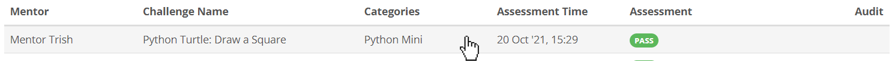
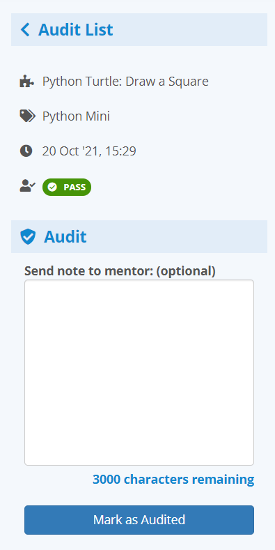
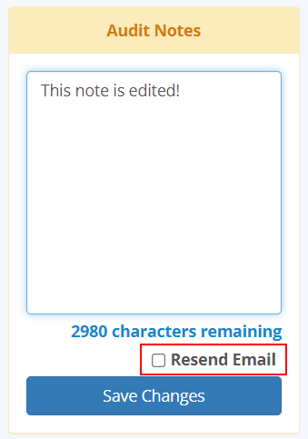
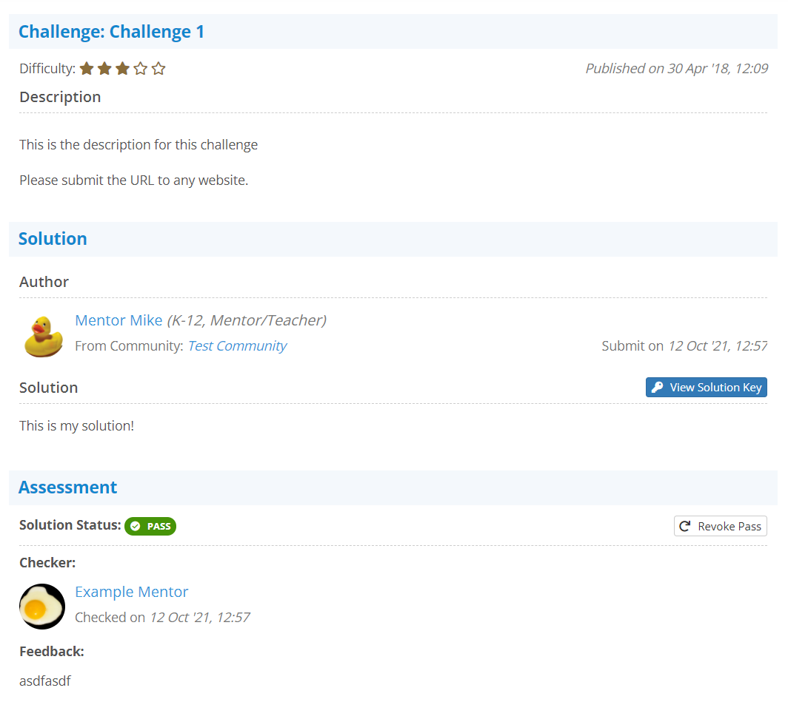

Accessing a Solution
You may access a particular solution from your history by simply clicking on it:

The Left Side Panel
When you are inside a solution, you will have a left side panel that gives some quick information about the solution you are looking at:

As a community group admin, you may choose to mark this solution as audited by simply clicking on the Mark as Audited button. However, if you choose to leave a note with the audit, then two things will happen:
- The mentor being audited will receive an email notifying them one of their feedbacks have been audited with a note
- Other community group admins and the mentor being audited will be able to see the note.
This is not meant to be a personal notetaking system, nor a private messaging system. It is meant to be a way to communicate good solution checking methods to your mentors. Any community group admin may audit any feedback that is not their own, and every admin may edit the audit notes left by any other community group admin (with the additional option to resend an additional email if the change is significant enough to warrant notifying the mentor in question a second time)

The Audit Solution Feedback View
Visually, the audit solution feedback view looks just like you were checking the solution, or reviewing one of your own feedback histories:

The only difference between this view and viewing one of your own feedbacks is that the mentor is somebody else. Note that you are still able to revoke a pass from a solution you have not checked yourself. This function is useful if a mentor passed a solution they shouldn't have, and the solution the student submitted is far enough off the mark to warrant a retry.
If you are revoking a solution's pass, this would most likely warrant leaving an audit note to the mentor who originally passed the solution so they don't make the same mistake twice.